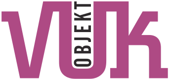
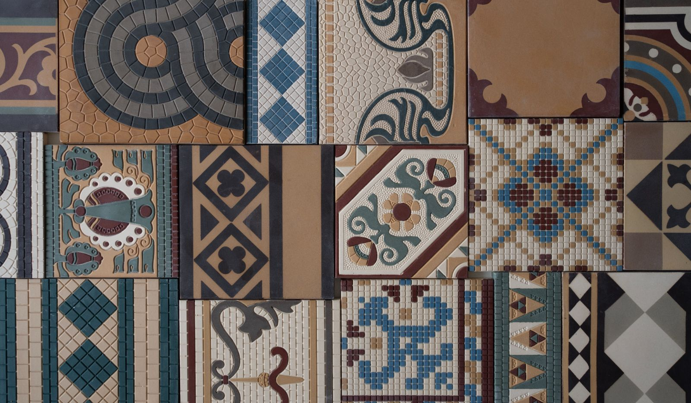
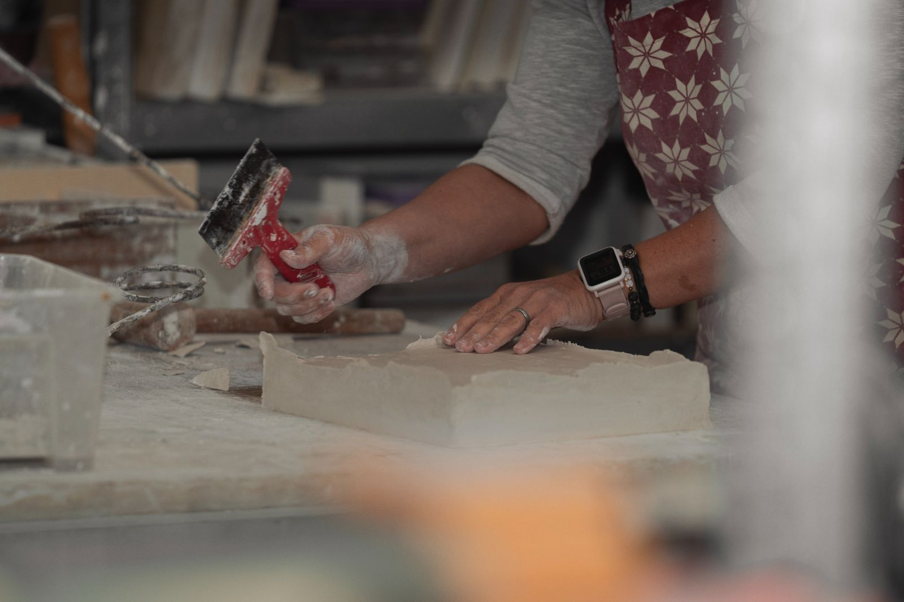
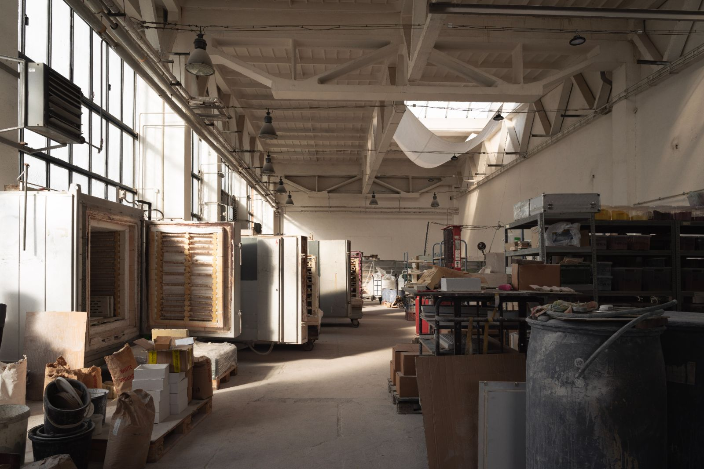
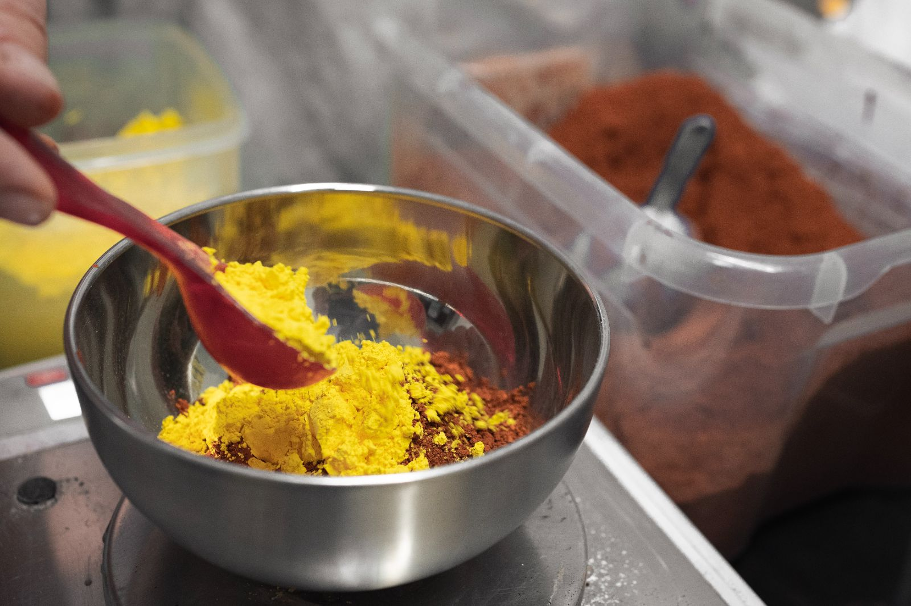
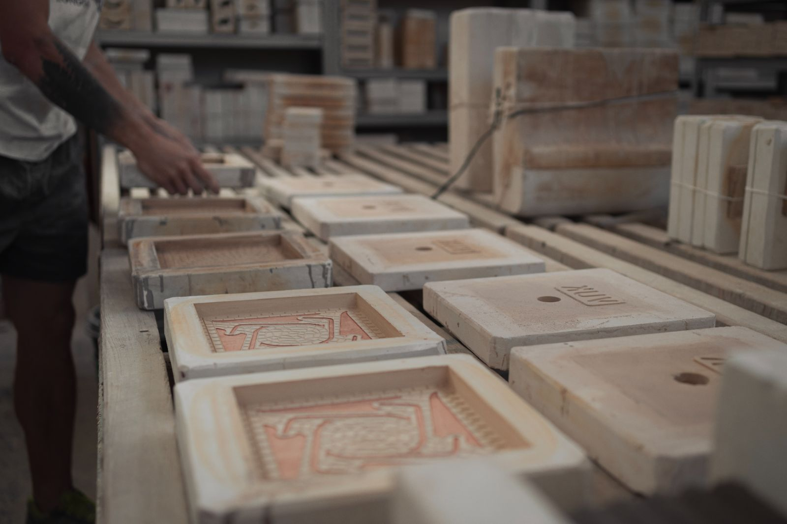

Tvoříme keramiku, která vydrží generace.
Vyrábíme historickou dlažbu, obklady a tvarovky pro opravy domů i velké rekonstrukce. Od jednoho kusu po rozsáhlé projekty.

Co vyrábíme
Každý výrobek děláme ručně, na zakázku a s neomezenou paletou barev a tvarů.
Jak objednat
Každá zakázka je u nás jedinečná. Proto s vámi projdeme celým procesem krok za krokem, od první konzultace po finální výrobek.

Od Hlavního nádraží v Praze po nemocnici v Ósace
Naše produkty naleznete v historických objektech i v nových stavbách po celém světě. Spolupracujeme s architekty, restaurátory, stavebními firmami i bytovými družstvy.

O nás
Jsme zakázková keramická dílna specializující se na výrobu keramických prvků pro exteriéry i interiéry budov.
Náš tým deseti zkušených pracovníků spojuje celoživotní zkušenosti z oboru stavební a žárovzdorné keramiky s osobním přístupem ke každému projektu.
Více o dílně →Máte dotaz, chcete objednat?
Zavolejte nebo napište s popisem projektu. Rádi přijedeme na místo a prohlédneme si keramiku, která má být nahrazena nebo doplněna.
Tvoříme keramiku, která vydrží generace.
Vyrábíme historickou dlažbu, obklady a tvarovky pro opravy domů i velké rekonstrukce. Od jednoho kusu po rozsáhlé projekty.
Co vyrábíme
Od Hlavního nádraží v Praze po nemocnici v Ósace
Máte dotaz, chcete objednat?
+420 603 168 843 vuk@vuk.czDomažlická 1123/194
318 00 Plzeň (areál ESSPE)
Historická dlažba
Tradiční řemeslná výroba pro historické interiéry
Nabízíme zhotovení všech tradičních vzorů dlaždic, které můžete najít v historických budovách, jako jsou divadla, radnice, kavárny, církevní stavby, kulturní památky, sokolovny a měšťanské bytové domy. Veškerá výroba dlaždic probíhá ručně s použitím tradičních metod, abychom dosáhli původního vzhledu i životnosti.
Nabízíme zhotovení všech tradičních vzorů dlaždic, které můžete najít v historických budovách, jako jsou divadla, radnice, kavárny, církevní stavby, kulturní památky, sokolovny a měšťanské bytové domy. Veškerá výroba dlaždic probíhá ručně s použitím tradičních metod, abychom dosáhli původního vzhledu i životnosti.
{{ b.t }}
{{ b.d }}


Tradiční vzory a technologie
Naše nabídka zahrnuje:
Všechny dlaždice vyrábíme s ohledem na jejich budoucí užití – zajišťujeme odpovídající pevnost, odolnost proti obrusu a snadnou údržbu, kterou vyžaduje provoz historických objektů.
Ukázky realizované dlažby
+42 dalších realizacíMáte dotaz, chcete objednat?
Zjistěte více o tom, jak objednat, nebo nás kontaktujte: